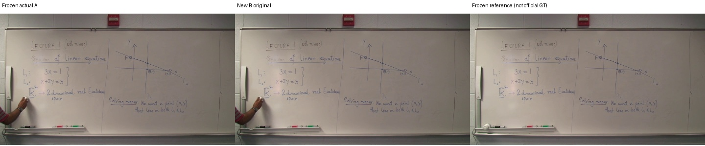
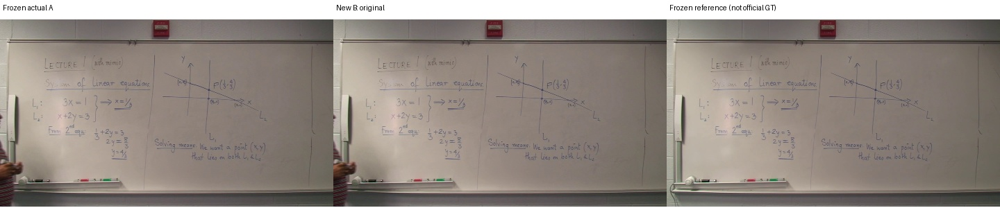
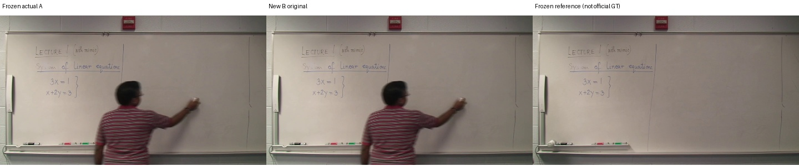
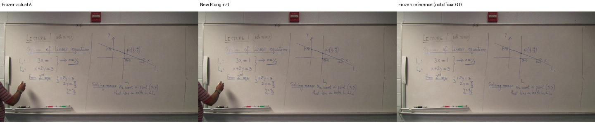
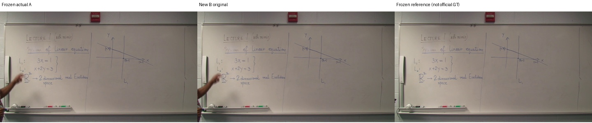
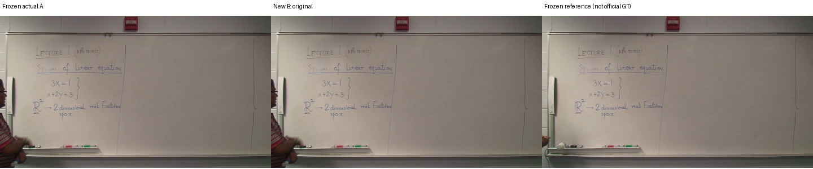
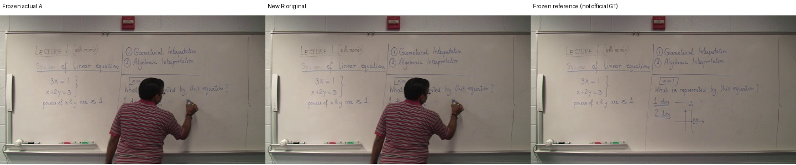

원본·기준 시각·후보·참고 이미지는 이전 실험과 동일합니다. 공식 GT 점수가 아닙니다.

{'A': {'precision': 0.9351501020110755, 'recall': 0.988349491689147, 'f1': 0.9610141130289687, 'gt_pixels': 84889, 'predicted_pixels': 89206, 'gt_components_area_ge_10': 145, 'component_coverage_at_80pct': 0.9862068965517241}, 'B': {'precision': 0.9351501020110755, 'recall': 0.988349491689147, 'f1': 0.9610141130289687, 'gt_pixels': 84889, 'predicted_pixels': 89206, 'gt_components_area_ge_10': 145, 'component_coverage_at_80pct': 0.9862068965517241}}
{'A': {'precision': 0.9812037234102137, 'recall': 0.9961578881945464, 'f1': 0.9886242589767806, 'gt_pixels': 88493, 'predicted_pixels': 89273, 'gt_components_area_ge_10': 172, 'component_coverage_at_80pct': 0.9941860465116279}, 'B': {'precision': 0.9812037234102137, 'recall': 0.9961578881945464, 'f1': 0.9886242589767806, 'gt_pixels': 88493, 'predicted_pixels': 89273, 'gt_components_area_ge_10': 172, 'component_coverage_at_80pct': 0.9941860465116279}}
{'A': {'precision': 0.9866051822573562, 'recall': 0.9821605407810324, 'f1': 0.9843778444575851, 'gt_pixels': 69677, 'predicted_pixels': 68310, 'gt_components_area_ge_10': 106, 'component_coverage_at_80pct': 0.9905660377358491}, 'B': {'precision': 0.9612923124373506, 'recall': 0.9079323162593108, 'f1': 0.9338506912805601, 'gt_pixels': 69677, 'predicted_pixels': 64845, 'gt_components_area_ge_10': 106, 'component_coverage_at_80pct': 0.9905660377358491}}
{'A': {'precision': 0.3788292667870426, 'recall': 0.9611146191921455, 'f1': 0.5434531256072663, 'gt_pixels': 49093, 'predicted_pixels': 129594, 'gt_components_area_ge_10': 62, 'component_coverage_at_80pct': 0.9516129032258065}, 'B': {'precision': 0.3788292667870426, 'recall': 0.9611146191921455, 'f1': 0.5434531256072663, 'gt_pixels': 49093, 'predicted_pixels': 129594, 'gt_components_area_ge_10': 62, 'component_coverage_at_80pct': 0.9516129032258065}}
{'A': {'precision': 0.9428803227645485, 'recall': 0.9990631462291636, 'f1': 0.9701590152537743, 'gt_pixels': 87527, 'predicted_pixels': 91212, 'gt_components_area_ge_10': 170, 'component_coverage_at_80pct': 1.0}, 'B': {'precision': 0.9428803227645485, 'recall': 0.9990631462291636, 'f1': 0.9701590152537743, 'gt_pixels': 87527, 'predicted_pixels': 91212, 'gt_components_area_ge_10': 170, 'component_coverage_at_80pct': 1.0}}
{'A': {'precision': 0.9409221325148462, 'recall': 0.9949369201452158, 'f1': 0.967175959772914, 'gt_pixels': 71893, 'predicted_pixels': 74935, 'gt_components_area_ge_10': 99, 'component_coverage_at_80pct': 0.98989898989899}, 'B': {'precision': 0.9409221325148462, 'recall': 0.9949369201452158, 'f1': 0.967175959772914, 'gt_pixels': 71893, 'predicted_pixels': 74935, 'gt_components_area_ge_10': 99, 'component_coverage_at_80pct': 0.98989898989899}}
{'A': {'precision': 0.9743620689655172, 'recall': 0.9687686560799632, 'f1': 0.9715573120433502, 'gt_pixels': 58627, 'predicted_pixels': 58000, 'gt_components_area_ge_10': 85, 'component_coverage_at_80pct': 0.9647058823529412}, 'B': {'precision': 0.9743620689655172, 'recall': 0.9687686560799632, 'f1': 0.9715573120433502, 'gt_pixels': 58627, 'predicted_pixels': 58000, 'gt_components_area_ge_10': 85, 'component_coverage_at_80pct': 0.9647058823529412}}
{'A': {'precision': 0.50395264990961, 'recall': 0.9693937547438076, 'f1': 0.6631550461805855, 'gt_pixels': 93543, 'predicted_pixels': 195818, 'gt_components_area_ge_10': 147, 'component_coverage_at_80pct': 0.9387755102040817}, 'B': {'precision': 0.50395264990961, 'recall': 0.9693937547438076, 'f1': 0.6631550461805855, 'gt_pixels': 93543, 'predicted_pixels': 195818, 'gt_components_area_ge_10': 147, 'component_coverage_at_80pct': 0.9387755102040817}}